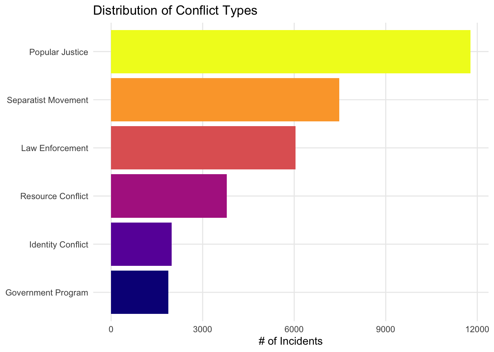
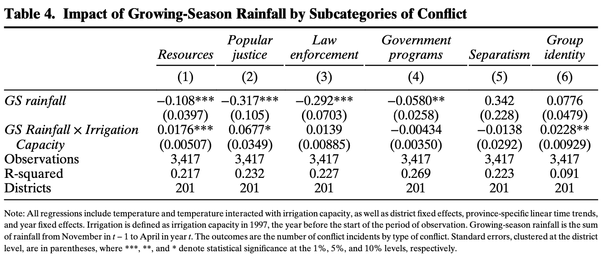
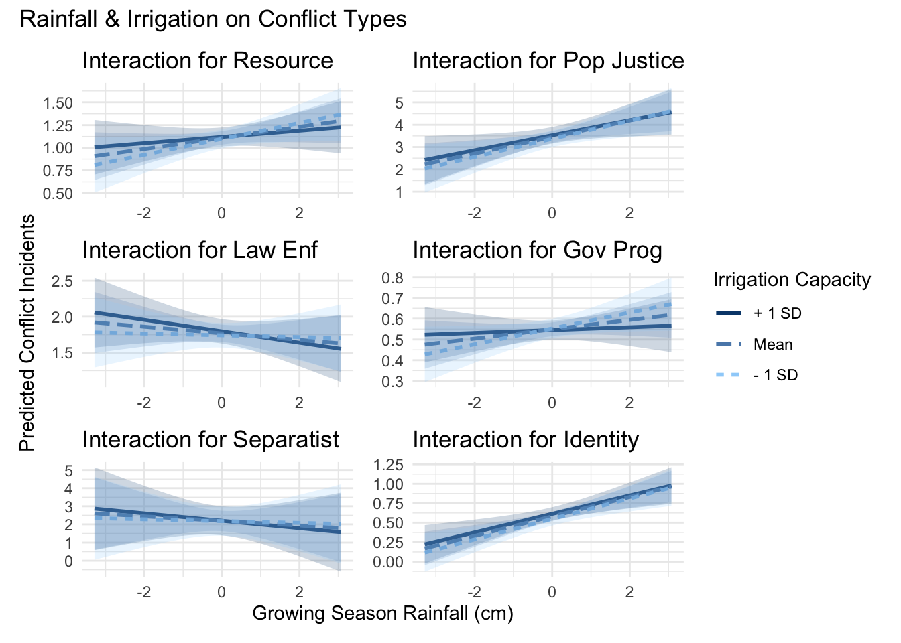

library(dplyr)
library(kableExtra)
library(tidyr)
library(viridis)
library(forcats)
library(ggplot2)
library(tools)
library(patchwork)
library(stringr)
library(here)
library(haven) # Load .dta files.
library(fixest) # For fixed-effects regression.
library(interactions) # Interaction plots.
data_dta <- read_dta(here("data", "data.dta"))EDS 241 Final Blog Post
Introduction
In this blog post we will be doing some exploration through the data.dta associated with the paper:
Gatti - 2020 - Can Irrigation Infrastructure Mitigate the Effect of Rainfall Shocks on Conflict.
In the paper the author focuses on two focal outcome variables: Rice Production & Conflict Incidents. For each variable they use different casual identification strategies to produce their data.
For the focus of our analysis we will be working with the Conflict Incidents and tieing them into a Fixed-Effects model.
In our analysis we will be trying to recreate their model for Table 4 in R. They originally used Stata to produce their work so we will be doing our best to mimic the results as best as possible.
Based on what we could infer from the paper, our data.dta file, and the stata documents we will be focusing on the following variables.
- z_rgrowing_season_cm: rgrowing_season_cm z-scores
- rgrowing_season_cm: Rainfall during the growing season in centimeters
- z_tgrowing_season: tgrowing_season z-scores
- tgrowing_season: Temperature during the growing season
- z_rain_ground_dams_ha: Interaction between rainfall z-scores and irrigation capacity in 1997
- z_temp_ground_dams_ha: Interaction between temperature z-scores and irrigation capacity in 1997
- year: Year
- prov: Province code
- district_code: District
Variables Representing Conflict Types:
- resource: Number of resource incidents
- pop_justice: Number of popular justice incidents
- law_enf: Number of law enforcement incidents
- gov_prog: Number of government programs incidents
- separatist: Number of separatist incidents
- identity: Number of identity group incidents
Loading Packages
Data Exploration
One thing we noticed about .dta files is that in ours we have text underneath each of our column names explaining what the column represents. We can’t extract this with just colnames() so we used a function to extract all those metadata labels.
# All column names + info about what it represents.
col_labels <- sapply(data_dta, function(x) attr(x, "label"))
# Show a few of our column names + metadata.
head(col_labels)$district_code
[1] "District"
$prov
[1] "Province code"
$island_code
[1] "Island"
$island_2
[1] "Outer and Inner islands"
$year
[1] "Year"
$total_area
[1] "Rice area in hectares"Explore Conflict Types
From our variables we noticed 6 different conflict types which were resource, pop_justice, law_enf, gov_prog, separatist, identity that we should take a look into.
Below is a visualizations of all the conflict types and their # of reported incidents.
# Filter out data for specific conflict types and find sum of reported incidents.
subset_of_conflicts <- data_dta %>%
select(c(resource, gov_prog, separatist, identity, pop_justice, law_enf)) %>%
pivot_longer(cols = everything(), names_to = "Conflict_Type", values_to = "Count") %>%
group_by(Conflict_Type) %>%
summarise(Total_Count = sum(Count, na.rm = TRUE)) %>%
arrange(desc(Total_Count)) %>%
ungroup()
# Clean up variable names.
subset_of_conflicts <- subset_of_conflicts %>%
mutate(
Conflict_Type = case_when(
Conflict_Type == "gov_prog" ~ "Government Program",
Conflict_Type == "identity" ~ "Identity Conflict",
Conflict_Type == "law_enf" ~ "Law Enforcement",
Conflict_Type == "pop_justice" ~ "Popular Justice",
Conflict_Type == "resource" ~ "Resource Conflict",
Conflict_Type == "separatist" ~ "Separatist Movement",
TRUE ~ Conflict_Type # Keep unchanged if not listed.
),
Conflict_Type = fct_reorder(Conflict_Type, Total_Count) # Order factor by total_count.
)
# Plot Conflict Types by # of incidents.
ggplot(subset_of_conflicts, aes(x = Conflict_Type, y = Total_Count, fill = Conflict_Type)) +
geom_bar(stat = "identity") +
labs(
x = "Conflict Types",
y = "# of Incidents",
title = "Distribution of Conflict Types") +
scale_fill_viridis(discrete = TRUE, option = "plasma") +
coord_flip() +
theme_minimal() +
theme(
legend.position = "none",
axis.title.y = element_blank(),
panel.grid.minor = element_blank(),
)
Popular Justice had the highest number of incidents, just under 12,000. Separatist Movement followed with around 8,000, and Law Enforcement had about 6,000. The last three (Resource Conflict, Identity Conflict, and Government Program) together make up roughly the same number of incidents as the Separatist Movement.
Moving on lets start setting up our models for Table 4.
Filter Data by Model Variables
For our data we want to limit it to the variables we outlined in our introduction as we prep for our model.
We want to filter out for only district, year, province, conflcit types, (standardized) temperature, (standardized) irrigation capacity, (standardized) rainfall as they are all necessary for reproducing our desired table.
# List of our conflict type column names.
conflict_vars <- c("resource", "pop_justice", "law_enf", "gov_prog", "separatist", "identity")
data_dta <- data_dta %>%
select(c(
district_code,
prov,
year,
z_rgrowing_season_cm,
z_tgrowing_season,
z_rain_ground_dams_ha,
z_temp_ground_dams_ha,
all_of(conflict_vars)
)
)Setting up our Fixed-Effects Regression by Conflict Type
To recreate out table from our model its important to try and take a look at the Stata code they used to build theirs.
Their table code looking something like this:
xtreg `var' `rain1' `temp1' `irrigation'
i.year
c.year#i.prov
i.prov#c.year,
fe vce(cluster district_code)
outreg2 using table4, word excel append keep(
z_rgrowing_season_cm c.z_ground_dams_ha#
c.z_rgrowing_season_cm) noconsThis is what their table looked like:

From their code we can see some aspects on how they set up their table. We can see that they uses var rain1 temp1 irrigation which var presumably represents the conflict type, rain1 represents our growing season rainfall, temp1 represents our growing season temp, and lastly irrigation is our irrigation capacity.
We can also point out the following that,
- i.year: represents year fixed effects.
- c.year#i.prov: Year-province interactions to account for province-specific trends over time.
- fe vce(cluster district_code): District-level fixed effects with clustered standard errors.
As well as the fact that they only want to view the results for the growing season rainfall as well as the interaction it has with the irrigation capacity.
We also have an excerpt from our paper which states
“Note: All regressions include temperature and temperature interacted with irrigation capacity, as well as district fixed effects, province-specific linear time trends, and year fixed effects. Irrigation is defined as irrigation capacity in 1997, the year before the start of the period of observation. Growing-season rainfall is the sum of rainfall from November in t− 1 to April in year t. The outcomes are the number of conflict incidents by type of conflict. Standard errors, clustered at the district level, are in parentheses, where ***, **, and * denote statistical significance at the 1%, 5%, and 10% levels, respectively.”
From this we can start peicing together our model based on the variables we’ve extracted from our set.
Our equation is going to look like this:
\[\tiny \begin{align*} conflict\_type_{i,t} = & \ \beta_0 + \beta_1 z\_rgrowing\_season\_cm_{i,t} + \beta_2 z\_rain\_ground\_dams\_ha_{i,t} \\ & + \beta_3 z\_tgrowing\_season_{i,t} + \beta_4 z\_temp\_ground\_dams\_ha_{i,t} \\ & + \gamma_t + \delta_t \cdot prov_i + \alpha_i + \varepsilon_{i,t} \end{align*}\]
or for our R code:
conflict_type(s) ~ z_rgrowing_season_cm + z_rain_ground_dams_ha + z_tgrowing_season + z_temp_ground_dams_ha + factor(year) + year:factor(prov) | district_code
# Function for running fixed-effect regressions used in Table 4 for each conflict type.
run_regression <- function(var) {
feols(
as.formula(paste0(var, " ~ z_rgrowing_season_cm + z_rain_ground_dams_ha +
z_tgrowing_season + z_temp_ground_dams_ha +
factor(year) + year:factor(prov) | district_code")),
data = data_dta, cluster = ~district_code
)
}
# Run our regression formula for each of our conflict types.
conflict_models <- lapply(conflict_vars, run_regression)Adding significance indicators to our model coefficients
# Function to extract regression coefficients and add significance stars.
extract_coefficients <- function(model) {
coefs <- coef(model)
std_errors <- sqrt(diag(vcov(model)))
p_values <- 2 * (1 - pnorm(abs(coefs / std_errors)))
data.frame(
term = names(coefs),
value = paste0(
round(coefs, 3),
case_when(
p_values < 0.01 ~ "***",
p_values < 0.05 ~ "**",
p_values < 0.1 ~ "*",
TRUE ~ ""
), " <br>(", round(std_errors, 3), ")"
)
)
}
# Add significance indicator for all models.
results_list <- lapply(conflict_models, extract_coefficients)Extracting other relevant model statistics for Table4
# Function to calculate given statistical function across all conflict models.
extract_model_stat <- function(statistic, name) {
data.frame(
term = name,
matrix(sapply(conflict_models, function(x) statistic(x)), nrow = 1)
) %>%
mutate(across(-term, as.character))
}
# Extract R_Squared, # of districts, and # of observations.
r_squared_df <- extract_model_stat(function(x) round(r2(x, type = "wr2"), 3), "R_Squared")
num_districts_df <- extract_model_stat(function(x) length(fixef(x)$district_code), "Num. Districts")
num_obs_df <- extract_model_stat(nobs, "Num. Observations")Renaming our columns to display appropriately in our resulting table.
In the last step we calculated the R_Squared, # Obvs, and # of Dsitricts per our results for each model by conflict type.
Since our dataframes share a similar structure we need to make sure to clean all of their column names as we get them ready to merge into the final table.
# Renaming our conflict variables for our table.
conflict_labels <- c(
"gov_prog" = "Government<br>Program",
"identity" = "Identity",
"law_enf" = "Law<br>Enforcement",
"pop_justice" = "Popular<br>Justice",
"resource" = "Resource",
"separatist" = "Separatist<br>Movement"
)
# Function to rename conflict type variables with their appropriate names.
rename_cols <- function(df) {
colnames(df) <- c("term", conflict_labels[conflict_vars])
return(df)
}
# Renaming the columns in these dataframes to match when we merge them later.
r_squared_df <- rename_cols(r_squared_df)
num_districts_df <- rename_cols(num_districts_df)
num_obs_df <- rename_cols(num_obs_df)Merge conflict model results into a data frame
In this step were just simple compiling our results into a neat table for our conflict types and renaming the output terms to the ones specified in Table 4 from our paper.
# Rename regression terms for our table.
term_labels <- c(
"z_rgrowing_season_cm" = "GS Rainfall",
"z_rain_ground_dams_ha" = "GS Rainfall × Irrigation Capacity"
)
# Convert results into a single dataframe and clean up output variable labels.
results_df <- bind_rows(results_list, .id = "Conflict_Type") %>%
filter(term %in% names(term_labels)) %>%
mutate(term = term_labels[term]) %>% # Clean up term labels.
pivot_wider(names_from = "Conflict_Type", values_from = "value") %>%
rename_with(~ conflict_labels[conflict_vars], -term) # Rename col names to match the rest.Appending our R_Squared, District Count, and Observation Counts
In this last step we finally get to merge all of our resulting dataframes into one as they all share the same column names.
Here we finalize our table using the kableExtras package.
# Bind r_squared, district counts, and observations to the table.
final_results <- bind_rows(results_df, r_squared_df, num_districts_df, num_obs_df)
# Format table using kable.
final_results %>%
kable(
format = "html",
caption = "Table 4: Impact of Growing-Season Rainfall on Conflict Subcategories",
col.names = c("Variable", conflict_labels[conflict_vars]),
escape = FALSE
) %>%
kable_styling(full_width = FALSE, bootstrap_options = c("striped"))| Variable | Resource | Popular Justice |
Law Enforcement |
Government Program |
Separatist Movement |
Identity |
|---|---|---|---|---|---|---|
| GS Rainfall | -0.108*** (0.04) |
-0.317*** (0.106) |
-0.292*** (0.07) |
-0.058** (0.026) |
0.342 (0.228) |
0.078 (0.048) |
| GS Rainfall × Irrigation Capacity | 0.018*** (0.005) |
0.068* (0.035) |
0.014 (0.009) |
-0.004 (0.003) |
-0.014 (0.029) |
0.023** (0.009) |
| R_Squared | 0.217 | 0.232 | 0.227 | 0.269 | 0.223 | 0.091 |
| Num. Districts | 201 | 201 | 201 | 201 | 201 | 201 |
| Num. Observations | 3417 | 3417 | 3417 | 3417 | 3417 | 3417 |
We can see that Rainfall is generally reducing our conflict types with the exception of Separatist and Identity Conflicts
Based on our second variable we can see that Irrigation capacity makes rainfall more likely to effect the following conflicts: Resource, Popular Justice, and Law Enforcement but mitigates our other 3.
We can see that rainfall, irrigation, and their interaction explain a meaningful part of the variation in conflict incidents of around 20% with the exception of Identity Conflicts at 9%.
Checking out the interactions plot
# Create an empty list to hold our model plots.
interaction_plots <- list()
# Loop through each model and generate their respective interaction plot.
for (i in seq_along(conflict_models)) {
conflict_model <- conflict_models[[i]] # Pulling each model by type.
conflict_type <- conflict_vars[i] # Conflict variable name.
# Generate predicted values.
pred_data <- data_dta %>%
mutate(predicted = predict(conflict_model, newdata = data_dta)) %>%
select(z_rgrowing_season_cm, z_rain_ground_dams_ha, predicted)
# Convert to a Simplified version to fit as an lm object
# because interact_plot doesn't work with `Fixest` package.
conflict_model_lm <- lm(predicted ~ z_rgrowing_season_cm * z_rain_ground_dams_ha, data = pred_data)
# Format conflict_type names for our plot.
# Our conflict_labels had html which doesn't work in our plot. Easier to do this.
conflict_names <- toTitleCase(str_replace_all(conflict_type, "_", " "))
# Plot interaction.
conflict_interaction_plot <- interact_plot(
conflict_model_lm,
pred = z_rgrowing_season_cm,
modx = z_rain_ground_dams_ha,
interval = TRUE,
legend.main = "Irrigation Capacity" # custom legend name.
) +
ggtitle(paste("Interaction for", conflict_names)) +
theme_minimal() +
labs(
x = "Growing Season Rainfall (cm)",
y = "Predicted Conflict Incidents ",
)
# Add plot to our plot list for patchwork.
interaction_plots[[i]] <- conflict_interaction_plot
}
# Combine all plots into a single figure.
combined_plot <- wrap_plots(interaction_plots, ncol = 2)
# All axis titles are the same we can make patchwork clean up our labels.
combined_plot +
plot_annotation(title = "Rainfall & Irrigation on Conflict Types") + # patchwork title.
plot_layout(axis_titles = "collect", # 1x 1y axis label.
guides = "collect") # 1 legend.